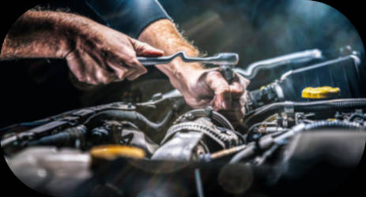

Bloco do motor
Retífica de bloco
Recuperação e usinagem para restabelecer as medidas e condições de funcionamento.
Ver detalhesEspecialistas em motores
Serviços de retífica e recuperação para motores de linha leve e pesada, realizados por uma equipe experiente e preparada.
Principais soluções
Bloco do motor
Recuperação e usinagem para restabelecer as medidas e condições de funcionamento.
Ver detalhes
Cabeçote
Correção de empenos, vedação e desgaste para recuperar o componente.
Ver detalhes
Montagem
Montagem técnica seguindo medidas, sequências e especificações adequadas.
Ver detalhes
Sobre a FMS
Trabalhamos com serviços de retífica para motores de linha leve e pesada. Cada peça passa por avaliação, medição e um processo adequado às suas condições.
Conhecer a FMS Motores